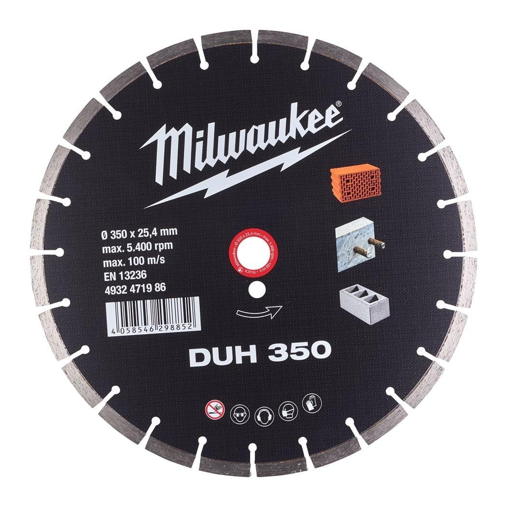

4932471986

| Fits MILWAUKEE® | DUH 350 |
| Aerated and breeze concrete blocks | Most suitable |
| Artificial stone | Most suitable |
| Artificial stone - hard | Most suitable |
| Bore size (mm) | 25.4 |
| Concrete tiles | Most suitable |
| Cutting width (mm) | 2.8 |
| Disc diameter (mm) | 350 |
| General building materials | Most suitable |
| Gneiss | Suitable |
| Granite | Most suitable |
| Granite tiles and slabs | Suitable |
| Lime and sandstone blocks hard | Most suitable |
| Lime and sandstone blocks medium | Most suitable |
| Lime and sandstone blocks soft and abrasive | Suitable |
| Marble tiles and slabs | Suitable |
| Materials suited for | Concrete|Reinforced concrete|Brick|Tile|Natural Stone|Granite |
| Pack quantity | 1 |
| Poroton | Most suitable |
| Porphyry | Most suitable |
| Roof tiles clay | Suitable |
| Roof tiles concrete | Suitable |
| Screed | Suitable |
| Segment height (mm) | 10 |
| Slate | Most suitable |
| Stoneware and clay tiles | Most suitable |
| Wheel size (mm) | 350 |